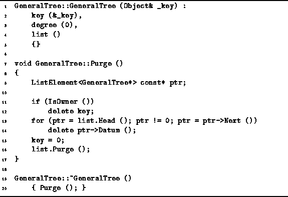
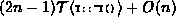

Data Structures and Algorithms
with Object-Oriented Design Patterns in C++
Data Structures and Algorithms
with Object-Oriented Design Patterns in C++
Program  defines the GeneralTree
constructor, destructor, and the Purge member function.
According to Definition ,
a general tree must contain at least one node--an empty tree is not allowed.
Therefore, the constructor takes one argument,
a reference to an Object instance.
The constructor initializes the member variables as follows:
The variable key is made to point at the object argument;
the degree is set to zero; and,
the linked list list is configured as an empty list.
The running time of the constructor is clearly O(1).
defines the GeneralTree
constructor, destructor, and the Purge member function.
According to Definition ,
a general tree must contain at least one node--an empty tree is not allowed.
Therefore, the constructor takes one argument,
a reference to an Object instance.
The constructor initializes the member variables as follows:
The variable key is made to point at the object argument;
the degree is set to zero; and,
the linked list list is configured as an empty list.
The running time of the constructor is clearly O(1).

Program: GeneralTree Class Constructor, Destructor and Purge Member Function Definitions
The Purge member function is inherited from the Container class interface. The purpose of Purge is to delete all contained objects and to release the associated storage if the container is the owner of those objects. Each node in a GeneralTree is a container with two varieties of contained objects--the root object and the subtrees. The approach taken in this implementation stipulates that the ownership of the root object is determined in the usual way but that all the subtrees of a given tree always are owned by that tree.
The GeneralTree class destructor simply calls the Purge member function to do its work. The Purge function first deletes the root object if it is the owner of that object. Then, it traverses the linked lists, deleting each of the attached subtrees. Finally, it deletes the linked list itself. Given a tree comprised of n nodes, the running time of the Purge function is  in the worst case. The factor (2n-1) is the sum of the number of contained objects deleted, n, and the number of trees deleted, n-1.
 Copyright © 1997 by Bruno R. Preiss, P.Eng. All rights reserved.
Copyright © 1997 by Bruno R. Preiss, P.Eng. All rights reserved.